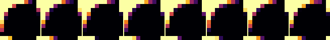
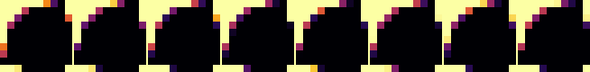

Read-only snapshot of the PiLens gallery, exported 2026-11-06 12:40. Code and how to run it yourself: github.com/fsaritome/PiLens.
pairs on pi_cf, base 10, n = 20,000
Verdict: indistinguishable from random controls. p_maxT = 0.625; classifier accuracy 0.39 (chance 0.5), p = 0.927; p_lens = 1.000; q (BH over 7 lens(es) in this run) = 1.000; 300 controls.


Does this lens show anything interesting?
0👍 0👎
| metric | pi_cf | controls mean ± sd | z | p (two-sided) |
|---|---|---|---|---|
| img_entropy_bits | 1.8540 | 1.7528 ± 0.070 | +1.45 | 0.136 |
| img_compress_ratio | 0.0473 | 0.0456 ± 0.001 | +1.22 | 0.193 |
| pair_max_z | 6856.4865 | 6672.9378 ± 151.611 | +1.21 | 0.236 |
| fft_slope | -1.5356 | -1.5031 ± 0.030 | -1.07 | 0.282 |
| pair_lag1_z | 6099.3976 | 5965.0658 ± 131.839 | +1.02 | 0.306 |
| symbol_entropy_bits | 2.5634 | 2.5696 ± 0.009 | -0.70 | 0.512 |
| fft_flatness | 0.0059 | 0.0057 ± 0.000358 | +0.58 | 0.571 |
| diff0_rate | 0.2116 | 0.2105 ± 0.003 | +0.36 | 0.704 |
| diff_entropy_bits | 3.1171 | 3.1187 ± 0.007 | -0.24 | 0.854 |
| fft_peak_log10 | 5.3090 | 5.3116 ± 0.035 | -0.07 | 0.940 |
Params: {"max_lag": 8, "cell": 0}. Saved 2026-11-06 09:28:46,
4s.